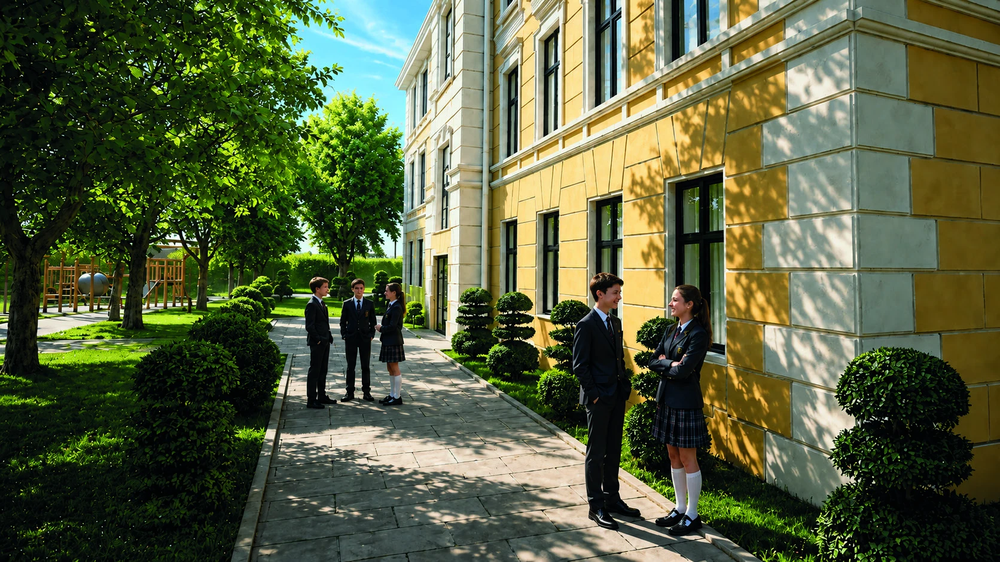
IX Молодёжный форум «Наследие» · 2026
Формула
Неба
Будущий центр дополнительного образования для школьников и студентов. Роботы, электроника и летательные модели в историческом здании воздухоплавательной школы.
- 10–17 лет
- Основная аудитория — школьники
- 4 направления
- От робототехники до аэродинамики
- Парковая, 7Р
- Санкт-Петербург
Дополнительное образование
От идеи до полёта
Четыре направления будущего центра. На занятиях ребята смогут пройти путь от первого эскиза до рабочего прототипа.
Робототехника
Собирать механизмы и программировать их движения.Пример проекта
Собрать робота на колёсах и настроить датчики так, чтобы он объезжал препятствия.
Электроника
Работать с цепями, датчиками и микроконтроллерами.Пример проекта
Собрать схему, которая включает подсветку при падении уровня освещённости, и проверить её в разных условиях.
3D-моделирование
Создавать цифровые чертежи и модели деталей.Пример проекта
Спроектировать крепление для двигателя небольшой модели и проверить, как оно стыкуется с корпусом.
Аэродинамика
Изучать, как форма и баланс влияют на полёт.Пример проекта
Собрать две модели планера с разной формой крыла и сравнить дальность полёта на испытательной площадке.
Будущий центр
Задай курс на высоту
В центре школьники и студенты смогут проектировать модели, собирать их в мастерских и испытывать во дворе. Кафе и выставки на первом этаже будут открыты для всех.

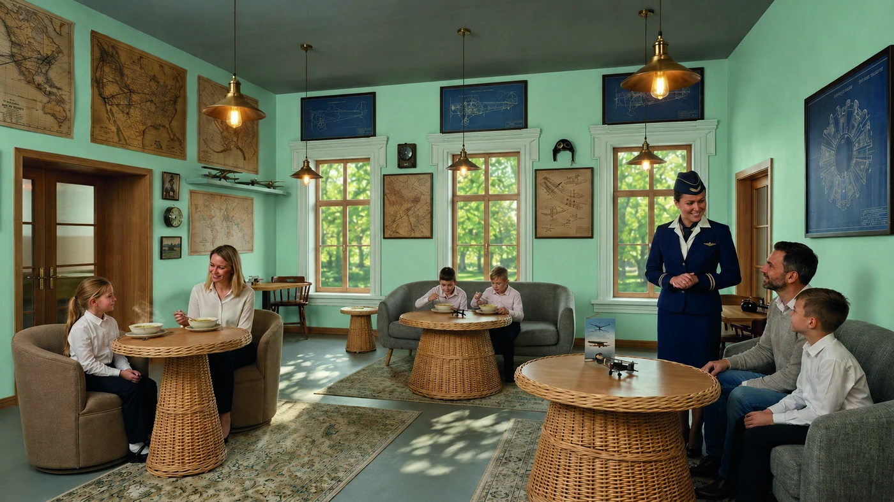
Что на каждом этаже
Открытые пространства
Кафе, выставочные залы, интерактивная экспозиция и зона ожидания. Проект предусматривает доступный учебный класс и универсальный санузел.
Увеличить план
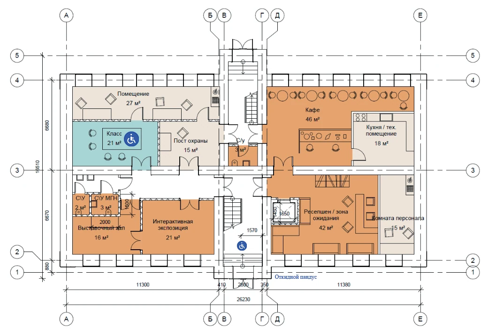
Лаборатории и мастерские
Две лаборатории и две мастерские для сборки моделей и работы над инженерными проектами.
Увеличить план
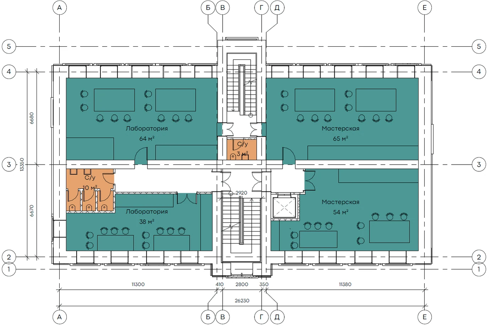
Классы и лекторий
Классы робототехники, электроники и 3D-моделирования, лаборатория аэродинамики и лекторий.
Увеличить план
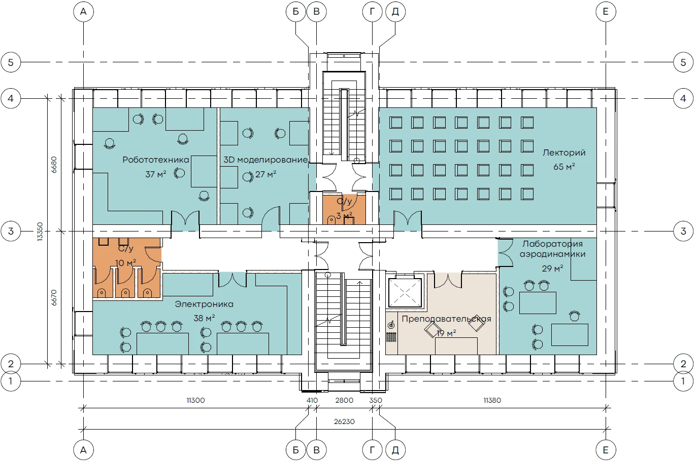
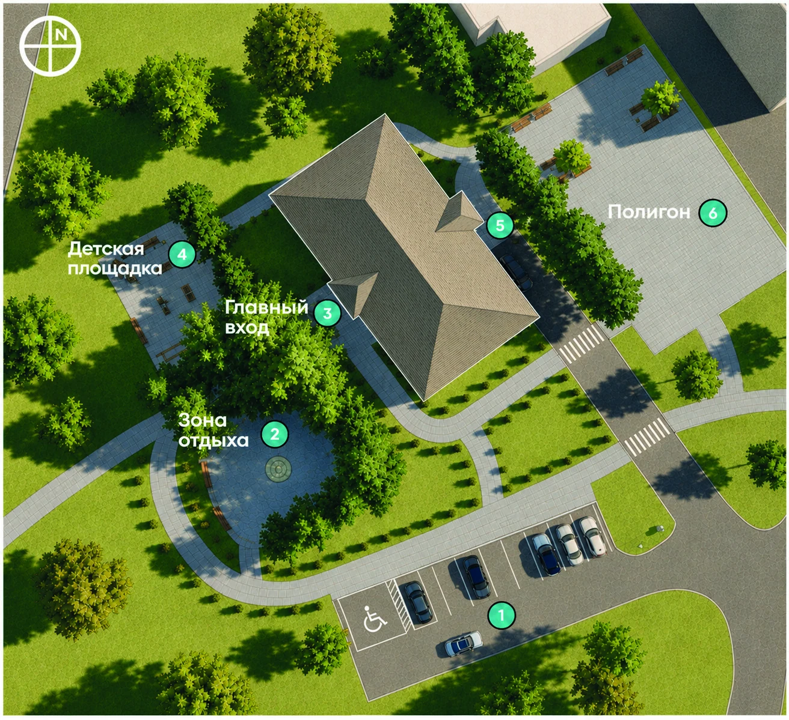
Благоустройство
Двор для испытаний и прогулок
Рядом с площадкой для запуска моделей проект предусматривает зону отдыха с фонтаном и детскую площадку.
85%из 75 опрошенных жителей готовы пользоваться двором регулярно или время от времени
История места
Школа, где учились летать
На Волковом поле испытывали аэростаты и готовили военных воздухоплавателей. Здесь учился Пётр Нестеров. Теперь команда предлагает вернуть одному из корпусов образовательную функцию и открыть в нём инженерные мастерские.
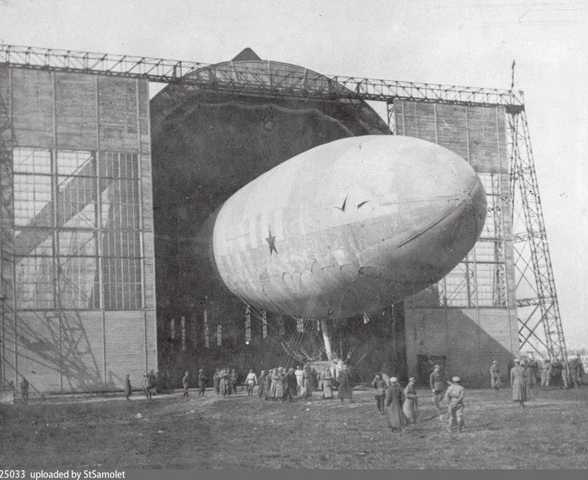
- 1885На Волковом поле учреждён Учебный воздухоплавательный парк.
- 1887Построены деревянные ангары, казармы и учебные корпуса.
- 1910–1912Формируется каменный ансамбль, в который входит жилой корпус.
- 1926Офицерская воздухоплавательная школа расформирована.
Реставрация
Как восстановить корпус
Проект сохраняет исторические фасады, вальмовую крышу, парадную лестницу и печи-камины. Чтобы вернуть здание в эксплуатацию, команда предлагает усилить стены, заменить разрушенные перекрытия и подключить инженерные сети.
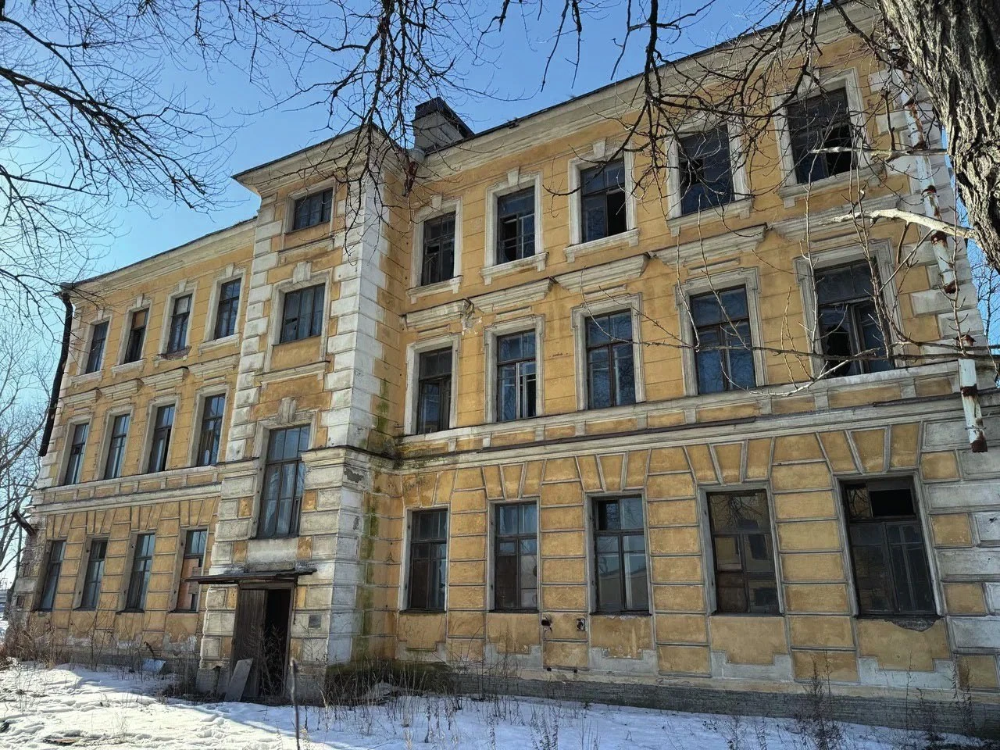
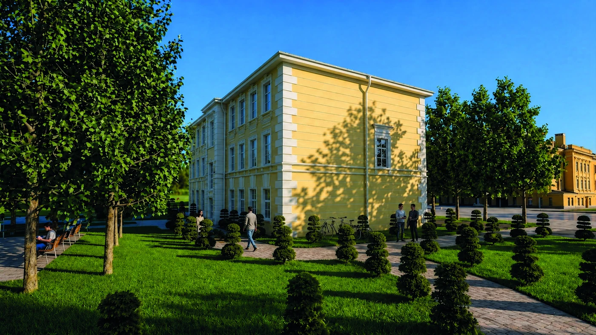
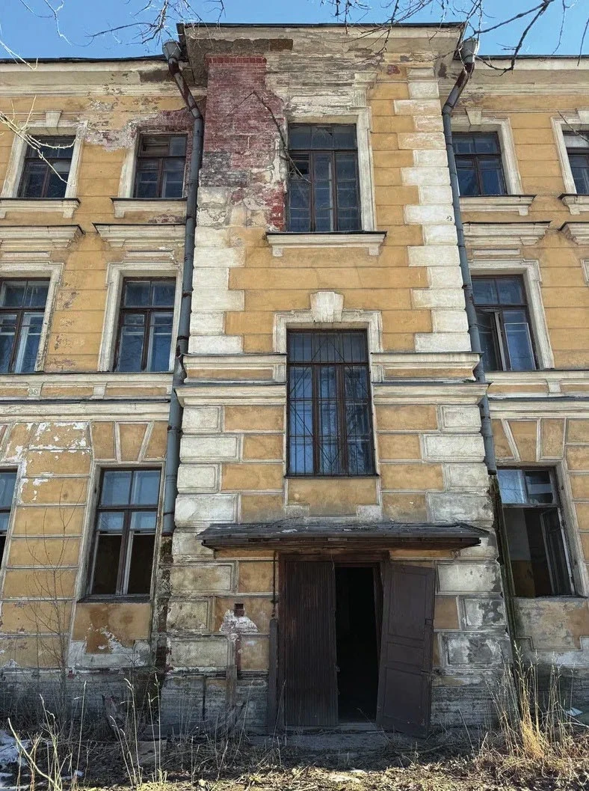
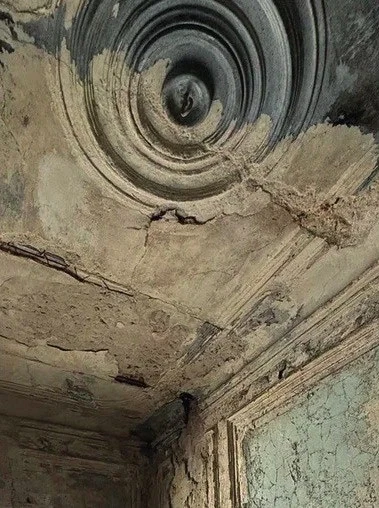
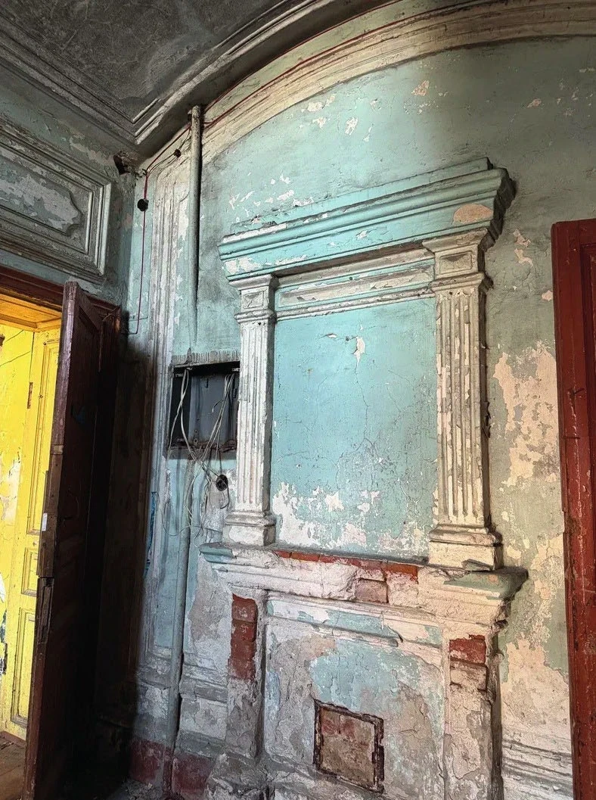
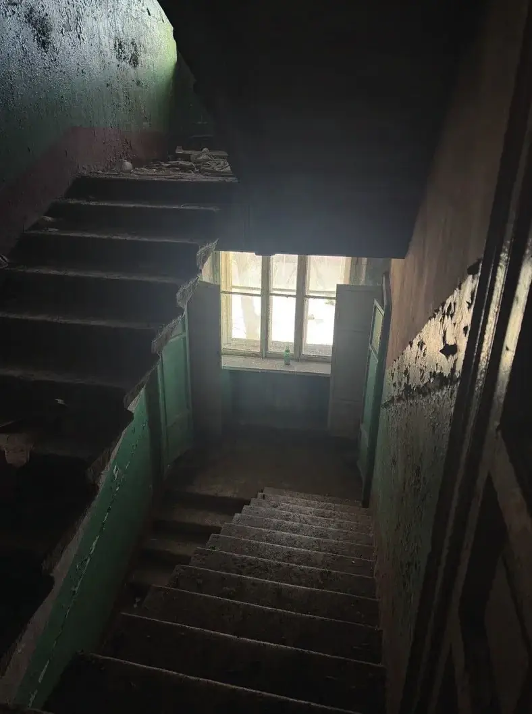
Реализация
Путь к открытию
Сроки и бюджет — предварительная оценка команды по материалам студенческой концепции.
Сводная смета реставрации и приспособления
- 2027Проектирование, экспертиза и согласование с КГИОП
- 2028–2030Реставрация, приспособление здания и благоустройство двора
- Сентябрь 2030Открытие центра по плану проекта
IX Молодёжный форум «Наследие»
Материалы проекта
Команда № 10
Афанасьев И. О., Бородулин Е. М., Григорьев И. А., Калиновский К. О., Мансуров Р. Д., Усов М. С., Шарифова С. Н., Рублёва Д. Э., Кремененко О. О.
Научный руководитель — Зацепина А. И.
СПбПУ Петра Великого · СПбГУПТД · Академия художеств имени Ильи Репина